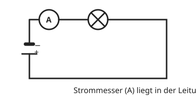

Die Stromstärke messen
Mit einem KI-Tutor lernen
Ein KI-Tutor erklärt dir diese Seite und hilft dir bei den Übungen. Wähl deinen Assistenten:
Mit Claude öffnen Mit ChatGPT öffnen Mit Mistral Vibe öffnen
Du nutzt dein eigenes Konto beim Anbieter. Der Assistent ist kein Angebot von lernapps.net: lernapps liefert nur Inhalte und Übungen. Die Wahl gilt für alle Seiten, nur auf diesem Gerät.
Das Messgerät
Die Stromstärke misst du mit dem Strommesser, auch Amperemeter genannt. Sein Schaltzeichen ist ein Kreis mit einem A.
Der Strommesser muss vom ganzen Strom durchflossen werden, den du messen willst. Darum baust du ihn in Reihe in die Leitung ein, so als wäre er ein Stück Leitung.

Der Strommesser liegt in der Leitung. Der ganze Strom fließt durch ihn.
Quelle: eigene Zeichnung. Lizenz: CC-BY-4.0.So misst du richtig
Beginne mit dem größten Messbereich. So geht das Gerät nicht kaputt, wenn die Stromstärke größer ist als gedacht. Schalte dann auf einen kleineren Bereich, bis du den Wert genau ablesen kannst. Lies die Einheit mit ab.
Vor und hinter der Lampe
Misst du die Stromstärke vor und hinter einer Lampe, bekommst du denselben Wert. Die Lampe verbraucht keinen Strom.
Übung
Übung
Lösung
In Reihe, so dass der ganze Strom durch ihn fließt. richtige Antwort
Nur dann misst er die Stromstärke des ganzen Stroms.
Neben die Lampe, mit zwei Leitungen zu ihren Anschlüssen.
So schließt man einen Spannungsmesser an. Ein Strommesser hätte dort einen Kurzschluss zur Folge.
Er muss gar nicht in den Stromkreis.
Das Gerät kann nur den Strom messen, der durch es hindurchfließt.
Der Strommesser wird in den Stromkreis eingebaut, so dass der Strom durch ihn fließt.
Mehr dazu:
Übung
Lösung
Mit dem größten richtige Antwort
So wird das Gerät nicht überlastet.
Mit dem kleinsten
Ist der Strom größer als der Bereich, kann das Gerät beschädigt werden.
Das ist egal
Es ist nicht egal: Ein zu kleiner Bereich kann das Gerät beschädigen.
Beginne immer mit dem größten Messbereich und gehe dann herunter.
Mehr dazu:
Übung
Lösung
Richtige Antwort: Die Aussage stimmt nicht.
Beide zeigen denselben Wert. Die Lampe verbraucht keinen Strom, sondern wandelt Energie um.
Mehr dazu:
Übung
Lösung
A richtige Antwort
A steht für Ampere.
V
Der Kreis mit V ist das Schaltzeichen des Spannungsmessers.
U
U ist das Formelzeichen der Spannung, kein Gerät.
Der Strommesser trägt ein A für Ampere.
Mehr dazu: